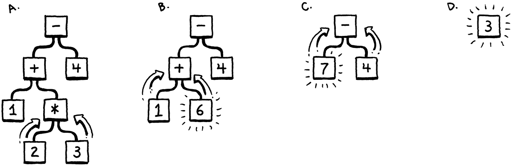
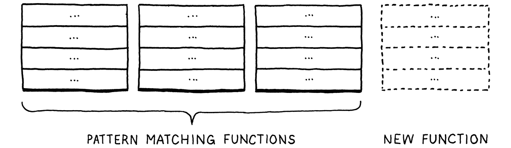
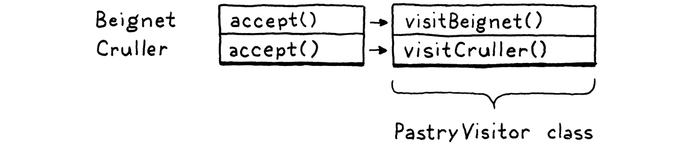

代码的表示
对于森林里的居民来说，几乎每一种树都有它的声音和特征。
-- Thomas Hardy,?Under the Greenwood Tree
在上一章中，我们将原始源代码作为字符串并将其转换为稍微高级的表示形式：一系列token。我们将在下一章编写的解析器获取这些token并再次将它们转换为更丰富、更复杂的表示。
在可以生成该表示之前，我们需要定义它。这就是本章的主题。在此过程中，我们将介绍一些关于形式语法的理论，感受函数式编程和面向对象编程之间的区别，复习几个设计模式，并进行一些元编程。
我非常担心这是本书中最无聊的章节之一，以至于我一直在其中塞入更多有趣的想法，直到我用完了篇幅。
在做所有这些之前，让我们关注主要目标——代码的表示。它应该易于解析器生成并且易于解释器使用。如果您还没有编写解析器或解释器，那么这些要求并不能完全说明问题。也许您的直觉可以提供帮助。当你扮演人类口译员的角色时，你的大脑在做什么？你如何在心理上评估这样的算术表达式：
1 + 2 * 3 - 4
因为你了解运算顺序——老式的“Please Excuse My Dear Aunt Sally”——你知道乘法先于加法或减法求值。可视化该优先级的一种方法是使用树。叶节点是数字，内部节点是运算符，每个操作数都有分支。
为了评估一个算术节点，需要知道它的子树的数值，所以必须先评估它们。这意味着从叶到根的工作方式——后序遍历：

A. 从整棵树开始，评估最底部的操作，
2 * 3。B. 接下来评估
+.C. 接下来，
-. D、最终答案。
如果我给你一个算术表达式，你可以很容易地画出其中一棵树。给定一棵树，您可以毫不费力地对其进行评估。因此，直觉上代码的可行表示似乎是一棵与语言的语法结构（运算符嵌套）相匹配的树。
这并不是说树是我们代码的唯一可能表示。在第 III 部分中，我们将生成字节码，这是另一种对人类不友好但更接近机器的表示形式。
我们需要更准确地了解那个语法是什么。就像上一章的词法文法一样，有大量关于句法文法的理论。与扫描时相比，我们对这个理论的研究要多一些，因为事实证明它是贯穿大部分解释器的有用工具。我们首先将Chomsky 层次结构向上移动一个级别...
5.1 上下文无关文法
在上一章中，我们用来定义词法的形式——字符如何分组为token的规则——被称为正则语言(regular language)。这对扫描器来说很好，它会发出一个扁平的token序列。但是正则语言(regular language)的功能不足以处理可以任意深度嵌套的表达式。
我们需要一个更大的锤子，而那个锤子就是上下文无关文法(CFG)。它是形式语法(formal grammar)工具箱中下一个重量级的工具。形式语法(formal grammar)采用一组称为“字母表(alphabet)”的原子片段。然后它定义了一组（通常是无限的）语法中的“字符串”，每个字符串 都是字母表中的一系列“字母”。
我使用所有这些引号是因为当你从词法转向句法语法时，这些术语会变得有点混乱。在我们的扫描器语法中，字母表由单个字符组成，字符串是有效的词素——大致是“单词”。在我们现在谈论的句法语法中，我们处于不同的粒度级别。现在字母表中的每个“字母”都是一个完整的token，而“字符串”是一个token序列——一个完整的表达式。
下边这个表格会有所帮助：
| 术语 | 词汇语法 | 句法文法 | |
|---|---|---|---|
| The “alphabet” is... | → | Characters | Tokens |
| A “string” is... | → | Lexeme or token | Expression |
| It’s implemented by the... | → | Scanner | Parser |
形式语法(formal grammar)的工作是指定哪些字符串有效，哪些无效。如果我们为英语句子定义一个语法，“eggs are tasty for breakfast”语法是正确的，但“tasty breakfast for are eggs”可能不在语法中。
5.1.1 语法规则
我们如何写下包含无限个有效字符串的语法？我们显然不能一一列举。相反，我们创建了一组有限的规则。您可以将它们视为可以在两个方向“玩”的游戏。
如果从规则开始，可以使用它们来生成语法中的字符串。以这种方式创建的字符串称为派生，因为每个 字符串都是从语法规则中派生出来的。在游戏的每一步中，都选择一个规则并按照它告诉您的去做。大多数关于形式语法的行话都来自于在这个方向上的发挥。规则被称为产生式，因为它们在语法中产生字符串。
上下文无关文法中的每个产生式都有一个head（它的名字）和一个body（描述它生成的内容）。在其纯粹的形式中，身体(body)只是一个符号列表。符号列表中的符号有两种：
- 终结符是语法字母表中的一个字母。您可以将其视为文字值。在我们定义的句法中，终结符是单独的词素——来自扫描器的token，例如
if或1234。
这些被称为“终端”，在“终点”的意义上，因为它们不会导致游戏中的任何进一步“移动”。你只需产生那个符号。
- 非终结符是对语法中另一条规则的命名引用。它的意思是“玩那个规则并在这里插入它产生的任何东西”。这样，文法就组成了。
将head 限制为单个符号是上下文无关文法的一个定义特征。更强大的形式主义，如不受限制的语法，允许在头部(head)和身体(body)中使用一系列符号。
还有最后一项改进：可能有多个同名规则。当到达具有该名称的非终端时，可以为它选择任何同名规则，以您的选中为准。
为了具体化，需要一种方法来写下这些生产规则。人们一直在努力使语法具体化，一直追溯到 Pā?ini 的Ashtadhyayi，它在几千年前编纂了梵语语法。在 John Backus 和他的公司需要一种符号来指定 ALGOL 58 并提出Backus-Naur 形式(BNF) 之前，并没有取得太大进展。从那时起，几乎每个人都使用一些 BNF 的味道，根据自己的口味进行调整。
我试图想出一些整洁的东西。每个规则都是一个名称，后面跟着一个箭头 (→)，然后是一系列符号，最后以分号 (;) 结尾。终结符是带引号的字符串，非终结符是小写单词。
是的，我们需要定义一种语法以用于定义语法的规则。我们是否也应该指定元语法？我们用什么表示法呢？一路向下都是语言！
这里使用早餐菜单的语法：
是的，我真的会在整本书中使用早餐示例。抱歉。
breakfast → protein "with" breakfast "on the side" ;
breakfast → protein ;
breakfast → bread ;
protein → crispiness "crispy" "bacon" ;
protein → "sausage" ;
protein → cooked "eggs" ;
crispiness → "really" ;
crispiness → "really" crispiness ;
cooked → "scrambled" ;
cooked → "poached" ;
cooked → "fried" ;
bread → "toast" ;
bread → "biscuits" ;
bread → "English muffin" ;
可以使用这个语法来生成随机早餐。让我们玩一局，看看效果如何。按照古老的惯例，游戏从语法中的第一条规则开始，这里是breakfast。一共有三个同名产品，随机选择第一个。得到的字符串如下所示：
protein "with" breakfast "on the side"
我们需要扩展第一个非终结符 protein，因此我们为此选择一个产生式。让我们选择：
protein → cooked "eggs" ;
接下来，我们需要 的产生式cooked，所以我们选择"poached"。那是一个终端，所以我们添加它。现在字符串看起来像：
"poached" "eggs" "with" breakfast "on the side"
下一个非终端又是breakfast。我们选择的第一个breakfast产生式递归地引用回breakfast规则。语法中的递归是一个好兆头，表明所定义的语言是上下文无关的，而不是常规的。特别是，递归非终结符在两边都有产生式的递归意味着该语言是不规则的。
想象一下，我们在
breakfast这里多次递归地扩展了规则，比如“培根加培根加培根加...” 为了正确地完成字符串，需要在末尾添加相等数量的“on the side”位。跟踪所需尾随部分的数量超出了正则语法(regular grammar)的能力。正则文法可以表示重复，但它们无法计算有多少重复，这是确保字符串具有相同数量的with和on the side部分所必需的。
我们可以一遍又一遍地挑选第一个产品breakfast，产生各种各样的早餐，比如“培根配香肠配炒鸡蛋配培根...” ,但我们不会。这次我们选择bread.有三个规则，每个规则只包含一个终端。我们会选择“English muffin 英式松饼”。
这样，字符串中的每个非终结符都被扩展，直到它最终只包含终结符，结果是：

加入一些火腿和荷兰酱，你就有班尼迪克蛋了。
每当我们遇到一个有多个产品的规则时，就任意选择一个。正是这种灵活性允许少量的语法规则对组合更大的字符串集进行编码。事实上，规则可以直接或间接地引用自身这一事实更能激发让我们将无限数量的字符串打包到一个有限的语法中。
5.1.2 增强的文法表示
在少量规则中填充无限组字符串是非常了不起的，但让我们更进一步。我们的表示法有效，但很乏味。所以，就像任何优秀的语言设计师一样，我们会在上面撒上一点语法糖——一些额外的方便符号。除了终结符和非终结符之外，我们还允许在规则主体中使用其他几种表达式：
- 每次我们想为它添加另一个产生式时，我们不会重复规则名称，我们将允许一系列由管道 (
|) 分隔的产生式。
bread → "toast" | "biscuits" | "English muffin" ;
- 此外，我们将允许使用括号进行分组，然后允许
|在其中从作品中间的一系列选项中选择一个。
protein → ( "scrambled" | "poached" | "fried" ) "eggs" ;
- 使用递归来支持重复的符号序列具有一定的吸引力，但是每次我们想要循环时创建一个单独的命名子规则有点麻烦。因此，我们还使用后缀
*来允许前面的符号或组重复零次或多次。
crispiness → "really" "really"* ;
这就是 Scheme 编程语言的工作原理。它根本没有内置的循环功能。相反，所有重复都以递归的形式表达。
- 后缀
+类似，但要求前面的产生式至少出现一次。
crispiness → "really"+ ;
- 后缀
?用于可选产生式。它之前的东西可以出现零次或一次，但不能更多。
breakfast → protein ( "with" breakfast "on the side" )? ;
有了所有这些语法细节，我们的早餐语法浓缩为：
breakfast → protein ( "with" breakfast "on the side" )?
| bread ;
protein → "really"+ "crispy" "bacon"
| "sausage"
| ( "scrambled" | "poached" | "fried" ) "eggs" ;
bread → "toast" | "biscuits" | "English muffin" ;
还不错，但愿。如果您习惯在文本编辑器中使用 grep 或正则表达式，那么应该熟悉大部分标点符号。主要区别在于这里的符号代表整个token，而不是单个字符。
我们将在本书的其余部分使用这种符号来精确描述 Lox 的语法。当您使用编程语言时，您会发现上下文无关语法（使用 这种 或EBNF或其他一些表示法）可以帮助明确您的非正式语法设计思想。它们也是与其他语言黑客就语法进行交流的便捷媒介。
我们为 Lox 定义的规则和产生式也是我们将要实现以表示内存中代码的树数据结构的指南。在这样做之前，我们需要一个 Lox 的实际语法，或者至少有一个可以让我们开始。
5.1.3 Lox 表达式的语法
在上一章中，我们一口气把Lox的整个词法语法搞定了。每个关键字和标点符号都在那里。句法语法更大，在真正启动并运行解释器之前研究整个东西真的很无聊。
相反，我们将在接下来的几章中快速浏览该语言的一个子集。一旦我们对这种微型语言进行了表示、解析和解释，后面的章节就会逐步向它添加新的特性，包括新的语法。现在，我们只需要关心少数几个表达式：
-
Literals。数字、字符串、布尔值和
nil. -
一元表达式。
!执行逻辑非和-否定数字的前缀。 -
二元表达式。我们熟知并喜爱的中缀算术 (
+,-,*,/) 和逻辑运算符 (==,!=,<,<=,>,>=)。 -
括号。一对
(和)包围的表达式。
这为我们提供了足够的表达式语法，例如：
1 - (2 * 3) < 4 == false
使用增强的表示方法，语法如下：
expression → literal
| unary
| binary
| grouping ;
literal → NUMBER | STRING | "true" | "false" | "nil" ;
grouping → "(" expression ")" ;
unary → ( "-" | "!" ) expression ;
binary → expression operator expression ;
operator → "==" | "!=" | "<" | "<=" | ">" | ">="
| "+" | "-" | "*" | "/" ;
这里有一点额外的元语法。除了为终端匹配精确词素的引号字符串外，我们CAPITALIZE的终端是单个词素，其文本表示可能会有所不同。NUMBER是任何数字文字，并且STRING是任何字符串文字。稍后，我们将为IDENTIFIER 做同样的事情。
这个语法实际上是有歧义的，我们将在解析它时看到这一点。但现在已经足够好了。
如果您愿意，可以尝试使用此语法生成一些表达式，就像之前使用早餐语法所做的那样。生成的表达式是否适合您？你能让它产生任何错误
1 + / 3吗？
5.2 实现语法树
最后，我们开始编写一些代码。那个小表达式语法是我们的骨架。由于语法是递归的——注意grouping,unary, 和binary都是如何引用回expression——我们的数据结构将形成一棵树。由于这个结构代表了我们语言的语法，所以它被称为语法树。
特别是，我们正在定义一个抽象语法树 abstract syntax tree(AST)。在解析树中，每个单独的语法产生式都成为树中的一个节点。AST 省略了后续阶段不需要的产生式。
我们的扫描器使用单个 Token 类来表示各种词素。为了区分不同的类型——想想数字123与字符串"123"——我们包含了一个简单的 TokenType 枚举。语法树不是那么同质。一元表达式只有一个操作数，二元表达式有两个，字面量没有。
我们可以将它们全部合并到一个具有任意子项列表的表达式类中。一些编译器会。但我喜欢充分利用 Java 的类型系统。所以我们将为表达式定义一个基类。然后，对于每种表达式——每个产生式expression——我们创建一个子类，其中包含特定于该规则的非终结符的字段。这样，如果我们尝试访问一元表达式的第二个操作数，就会出现编译错误。
token也不是完全同质的。字面量 token存储值，但其他种类的词素不需要该状态。我已经看到扫描器对字面量和其他类型的词素使用不同的类，但我想让事情变得更简单。
是这样的：
package com.craftinginterpreters.lox;
abstract class Expr {
static class Binary extends Expr {
Binary(Expr left, Token operator, Expr right) {
this.left = left;
this.operator = operator;
this.right = right;
}
final Expr left;
final Token operator;
final Expr right;
}
// Other expressions...
}
我避免在代码中使用缩写，因为它们会让不知道它们代表什么的读者感到困惑。但在我看过的编译器中，“Expr”和“Stmt”无处不在，我不妨现在开始让您习惯它们。
Expr 是所有表达式类继承自的基类。从中可以看出Binary子类嵌套在其中。对此没有技术需求，但它可以让我们将所有类塞进一个 Java 文件中。
5.2.1 不怎么面向对象
您会注意到，与 Token 类非常相似，这里没有任何方法。这是一个很简单的类,排列的很整齐，但只是一堆数据。这在像 Java 这样的面向对象语言中感觉很奇怪。不应该用 class 做点什么吗？
问题是这些树类不属于任何一个域。他们是否应该有解析方法，因为那是创建树的地方？或者解释，因为那是他们被消费的地方？树节点跨越这些领域之间的边界，这意味着它们实际上不属于任何一方。
事实上，这些类型的存在是为了让解析器和解释器能够进行通信。这适用于没有关联行为的简单数据类型。这种风格在像 Lisp 和 ML 这样所有数据都与行为分离的函数式语言中非常自然，但在 Java 中感觉很奇怪。
函数式编程爱好者现在正跳起来惊呼“看！面向对象的语言不适合解释器!” 我不会走那么远。您会记得扫描器本身非常适合面向对象。它具有所有可变状态以跟踪它在源代码中的位置、一组定义良好的公共方法和一些私有辅助函数。
我的感觉是，解释器的每个阶段或部分都以面向对象的风格工作得很好。正是在它们之间流动的数据结构被剥夺了行为。
5.2.2 对树进行元编程
Java 可以表达无行为类，但我不会说它在这方面特别出色。十一行代码来填充一个对象中的三个字段非常乏味，当全部完成后，我们将拥有 21 个这样的类。
我不想浪费你的时间或我的墨水写下所有这些。真的，每个子类的本质是什么？名称和具有类型字段的列表。就是这样。我们是聪明的语言黑客，对吧？让我们自动化。
想象一下，当你读到那篇文章时，我在跳笨拙的机器人舞。“AU-TO-MATE.”
与其繁琐地手写每个类定义、字段声明、构造函数和初始值设定项，我们将拼凑一个脚本来为我们完成这些工作。它有每个树类型的描述——它的名称和字段——它会打印出定义具有该名称和状态的类所需的 Java 代码。
这个脚本是一个微型 Java 命令行应用程序，它生成一个名为“Expr.java”的文件：
我从 Jython 和 IronPython 的创建者 Jim Hugunin 那里得到了编写语法树类脚本的想法。
实际的脚本语言比 Java 更适合这个，但我尽量不向您抛出太多语言。
package com.craftinginterpreters.tool;
import java.io.IOException;
import java.io.PrintWriter;
import java.util.Arrays;
import java.util.List;
public class GenerateAst {
public static void main(String[] args) throws IOException {
if (args.length != 1) {
System.err.println("Usage: generate_ast <output directory>");
System.exit(64);
}
String outputDir = args[0];
}
}
// tool/GenerateAst.java, create new file
请注意，此文件位于不同的包中，.tool而不是.lox.该脚本不是解释器本身的一部分。这是我们这些破解解释器的人自己运行以生成语法树类的工具。完成后，我们将“Expr.java”视为实现中的任何其他文件。我们只是自动化该文件的创作方式。
要生成类，它需要对每种类型及其字段进行一些描述。
String outputDir = args[0];
defineAst(outputDir, "Expr", Arrays.asList(
"Binary : Expr left, Token operator, Expr right",
"Grouping : Expr expression",
"Literal : Object value",
"Unary : Token operator, Expr right"
));
}
// tool/GenerateAst.java, in main()
为了简洁起见，我将表达式类型的描述塞进了字符串。每个都是类的名称，后面:是字段列表，用逗号分隔。每个字段都有一个类型和一个名称。
private static void defineAst(
String outputDir, String baseName, List<String> types)
throws IOException {
String path = outputDir + "/" + baseName + ".java";
PrintWriter writer = new PrintWriter(path, "UTF-8");
writer.println("package com.craftinginterpreters.lox;");
writer.println();
writer.println("import java.util.List;");
writer.println();
writer.println("abstract class " + baseName + " {");
writer.println("}");
writer.close();
}
// tool/GenerateAst.java, add after main()
当我们调用它时，baseName是“Expr”，它既是类的名称，也是它输出的文件的名称。我们将其作为参数传递而不是对名称进行硬编码，因为稍后我们将为语句添加一个单独的类族。
在基类内部，我们定义了每个子类。
writer.println("abstract class " + baseName + " {");
// The AST classes.
for (String type : types) {
String className = type.split(":")[0].trim();
String fields = type.split(":")[1].trim();
defineType(writer, baseName, className, fields);
}
writer.println("}");
// tool/GenerateAst.java, in defineAst()
这不是世界上最优雅的字符串操作代码，但没关系。它只运行在我们给它的一组准确的类定义上。健壮性不是优先事项。
该代码依次调用：
private static void defineType(
PrintWriter writer, String baseName,
String className, String fieldList) {
writer.println(" static class " + className + " extends " +
baseName + " {");
// Constructor.
writer.println(" " + className + "(" + fieldList + ") {");
// Store parameters in fields.
String[] fields = fieldList.split(", ");
for (String field : fields) {
String name = field.split(" ")[1];
writer.println(" this." + name + " = " + name + ";");
}
writer.println(" }");
// Fields.
writer.println();
for (String field : fields) {
writer.println(" final " + field + ";");
}
writer.println(" }");
}
// tool/GenerateAst.java, add after defineAst()
差不多了，所有出色的 Java 样板文件都已完成。它声明类主体中的每个字段。它为类定义了一个构造函数，每个字段都有参数，并在主体中初始化它们。
现在编译并运行这个 Java 程序，它会生成一个包含几十行代码的新“.java”文件。该文件即将变得更长。
附录 II包含在我们完成 jlox 的实现并定义其所有语法树节点后由该脚本生成的代码。
5.3 处理树
戴上你的想象力帽子思考一会儿。即使我们还没有做到这一点，请考虑解释器将如何处理语法树。Lox 中的每种表达式在运行时的行为都不同。这意味着解释器需要选择不同的代码块来处理每种表达式类型。在处理token时，我们可以简单地判断 TokenType。但是我们没有语法树的“类型”枚举，每个语法树只有一个单独的 Java 类。
我们可以编写一长串类型测试：
if (expr instanceof Expr.Binary) {
// ...
} else if (expr instanceof Expr.Grouping) {
// ...
} else // ...
但是所有这些按顺序的类型测试都很慢。名称按字母顺序排列在后面的表达式类型将需要更长的时间来执行，因为它们if在找到正确的类型之前会经历更多的情况。这不是我认为的优雅解决方案。
我们有一系列类，我们需要将一大块行为与每个类相关联。在像 Java 这样的面向对象语言中，自然的解决方案是将这些行为放入类本身的方法中。我们可以在 Expr 上添加一个抽象interpret()方法，然后每个子类都会实现它来解释自己。
这个确切的东西在Design Patterns: Elements of Reusable Object-Oriented Software中被字面称为“解释器模式”，Erich Gamma 等人著。
这适用于小型项目，但扩展性很差。正如我之前提到的，这些树类跨越了几个领域。至少，解析器和解释器都会搞砸它们。正如您稍后将看到的，我们需要对它们进行名称解析。如果我们的语言是静态类型的，我们就会通过类型检查。
如果我们为这些操作中的每一个都向表达式类添加实例方法，那将会把一堆不同的域混在一起。这违反了关注点分离并导致难以维护的代码。
5.3.1 表达式问题
这个问题比乍看起来比较基础。我们有一些类型，以及一些像“解释”这样的高级操作。对于每一对类型和操作，我们需要一个特定的实现。想象一个表格：

行是类型，列是操作。每个单元格代表在该类型上实现该操作的唯一代码段。
像 Java 这样的面向对象语言假定一行中的所有代码自然地组合在一起。它表明您对一个类型所做的所有事情都可能彼此相关，并且该语言使将它们一起定义为同一类中的方法变得容易。

这使得通过添加新行来扩展表变得容易。只需定义一个新类。无需触及现有代码。但是想象一下，如果你想添加一个新的操作——一个新的列。在 Java 中，这意味着破解每个现有的类并向其中添加一个方法。
ML家族中的函数式范式语言扭转了这种局面。在那里，您没有带有方法的类。类型和函数是完全不同的。要为多种不同类型实现一个操作，可以定义一个函数。在该函数的主体中，您使用模式匹配——一种基于类型的类固醇开关——在一个地方实现每种类型的操作。
ML 是“metalanguage”的缩写，由罗宾·米尔纳 (Robin Milner) 和他的朋友们创建，构成了伟大的编程语言家族树中的主要分支之一。它的子语言包括 SML、Caml、OCaml、Haskell 和 F#。甚至 Scala、Rust 和 Swift 也非常相似。
与 Lisp 非常相似，它是一种充满好创意的语言，以至于今天的语言设计者在 40 多年后仍在重新发现它们。
这使得添加新操作变得很简单——只需定义另一个在所有类型上进行模式匹配的函数。

但是，相反，添加一个新类型是很困难的。您必须返回并向所有现有函数中的所有模式匹配添加一个新情景。
每种风格都有一定的不足。这就是范式名称的字面意思——面向对象的语言希望您根据类型行来定位代码。相反，函数式语言鼓励您将每一列的代码价值集中到一个函数中。
一群聪明的语言书呆子注意到这两种风格都不能轻松地将行和列添加到表格中。他们将这个困难称为“表达式问题”，因为——就像我们现在一样——他们在试图找出在编译器中对表达式语法树节点建模的最佳方法时第一次遇到了这个问题。
具有多种方法的语言，如 Common Lisp 的CLOS、Dylan 和 Julia 确实支持轻松添加新类型和操作。他们通常牺牲的是静态类型检查或单独编译。
人们已经抛出了各种语言特性、设计模式和编程技巧来试图解决这个问题，但还没有完美的语言能够解决这个问题。与此同时，我们能做的最好的事情就是尝试选择一种语言，其方向与我们正在编写的程序中的自然架构接缝相匹配。
面向对象对我们的解释器的许多部分都适用，但这些树类与 Java 的本质相冲突。幸运的是，我们可以使用一种设计模式来处理它。
5.3.2 访问者模式
访问者模式是所有设计模式中被最普遍误解的模式，当您查看过去几十年的软件架构过剩时，它确实在说明一些事情。
麻烦始于术语。该模式与“访问”无关，其中的“接受”方法也不会让人联想到任何有用的东西。许多人认为该模式与遍历树有关，但事实并非如此。我们将在一组树状类上使用它，但这是巧合。正如您将看到的，该模式同样适用于单个对象。
Visitor 模式实际上是关于在 OOP 语言中近似函数式风格。它使我们可以轻松地向该表添加新列。我们可以在一个地方为一组类型定义新操作的所有行为，而不必触及类型本身。它的实现方式与我们解决计算机科学中几乎所有问题的方式相同：通过添加一个间接层。
在我们将它应用到我们自动生成的 Expr 类之前，让我们来看一个更简单的例子。假设我们有两种糕点：甜甜圈(beignets)和油条(crullers)。
beignet（发音为“ben-yay”，两个音节同等重音）是一种油炸糕点，与甜甜圈(doughnuts)属于同一家族。当法国人在 1700 年代殖民北美时，他们带来了甜菜根。今天，在美国，它们与新奥尔良的美食有着最密切的联系。
我最喜欢的消费方式是在 Café du Monde 刚从油炸锅里拿出来，堆满糖粉，然后喝一杯牛奶咖啡，而我看着游客们摇摇晃晃地四处走动，试图摆脱前一晚狂欢带来的宿醉.
abstract class Pastry {
}
class Beignet extends Pastry {
}
class Cruller extends Pastry {
}
我们希望能够定义新的糕点操作——烹饪(cooking)、食用(eating)、装饰(decorating)等——而不必每次都向每个类添加新方法。我们是这样做的。首先，我们定义一个单独的接口。
interface PastryVisitor {
void visitBeignet(Beignet beignet);
void visitCruller(Cruller cruller);
}
在Design Patterns中，这两种方法的命名容易混淆
visit()，它们依靠重载来区分。这导致一些读者认为正确的访问方法是在运行时根据其参数类型选择的。事实并非如此。与 overriding 不同，overloading是在编译时静态调度的。为每个方法使用不同的名称使派发更加明显，并且还向您展示了如何在不支持重载(overloading)的语言中应用此模式。
可以对糕点(Pastry)执行的每个操作都是一个实现该接口的新类。每种糕点都有具体的方法。这使得两种类型的操作代码都紧密地放在一个类中。
给定一些糕点(Pastry)，我们如何根据其类型将其路由到访问者的正确方法 ,这依靠多态性！我们将此方法添加到 Pastry：
abstract class Pastry {
abstract void accept(PastryVisitor visitor);
}
每个子类都实现它。
class Beignet extends Pastry {
@Override
void accept(PastryVisitor visitor) {
visitor.visitBeignet(this);
}
}
和：
class Cruller extends Pastry {
@Override
void accept(PastryVisitor visitor) {
visitor.visitCruller(this);
}
}
要对糕点(pastry)执行操作，我们调用它的accept()方法并为我们要执行的操作传入访问者。糕点(pastry)特定子类的重写实现accept()——反过来调用访问者的适当访问方法并将其自身传递给它。
这就是技巧的核心。它允许我们在糕点(pastry)类上使用多态分派来为访问者类选择合适的方法。在表中，每个糕点类都是一行，但如果您查看单个访问者的所有方法，它们会形成一列。

我们为每个类添加了一个accept()方法，我们可以为任意数量的访问者使用它，而无需再次接触糕点(pastry)类。这是一个聪明的模式。
5.3.3 表达式访问者
好的，让我们把它融入到我们的表达式类中。我们还将稍微改进一下模式。在糕点(pastry)示例中，访问和accept()方法不返回任何内容。实际上，访问者通常希望定义产生值的操作。但是accept()返回类型应该是什么？我们不能假设每个访问者类都想产生相同的类型，所以我们将使用泛型让每个实现填充一个返回类型。
另一个常见的改进是传递给访问方法的附加“上下文(context)”参数，然后作为参数发送回
accept().这让操作采用额外的参数。我们将在本书中定义的访问者不需要它，所以我省略了它。
首先，我们定义访问者接口。同样，将它嵌套在基类中，以便可以将所有内容保存在一个文件中。
writer.println("abstract class " + baseName + " {");
defineVisitor(writer, baseName, types);
// The AST classes.
// tool/GenerateAst.java, in defineAst()
该函数生成访问者接口。
private static void defineVisitor(
PrintWriter writer, String baseName, List<String> types) {
writer.println(" interface Visitor<R> {");
for (String type : types) {
String typeName = type.split(":")[0].trim();
writer.println(" R visit" + typeName + baseName + "(" +
typeName + " " + baseName.toLowerCase() + ");");
}
writer.println(" }");
}
// tool/GenerateAst.java, add after defineAst()
在这里，我们遍历所有子类并为每个子类声明一个访问方法。当我们稍后定义新的表达式类型时，这将自动包含它们。
在基类内部，我们定义了抽象accept()方法。
defineType(writer, baseName, className, fields);
}
// The base accept() method.
writer.println();
writer.println(" abstract <R> R accept(Visitor<R> visitor);");
writer.println("}");
// tool/GenerateAst.java, in defineAst()
最后，每个子类实现它并为自己的类型调用正确的访问方法。
writer.println(" }");
// Visitor pattern.
writer.println();
writer.println(" @Override");
writer.println(" <R> R accept(Visitor<R> visitor) {");
writer.println(" return visitor.visit" +
className + baseName + "(this);");
writer.println(" }");
// Fields.
// tool/GenerateAst.java, in defineType()
好了。现在我们可以在表达式上定义操作，而无需处理类或我们的生成器脚本。编译并运行此生成器脚本以输出更新的“Expr.java”文件。它包含一个生成的 Visitor 接口和一组支持使用它的 Visitor 模式的表达式节点类。
在我们结束这个杂乱无章的章节之前，让我们实现那个 Visitor 接口并查看模式的实际应用。
5.4 好看的打印
当我们调试解析器和解释器时，查看解析后的语法树并确保它具有我们期望的结构通常很有用。我们可以在调试器中检查它，但这可能很麻烦。
相反，我们想要一些代码，在给定语法树的情况下，生成它的明确字符串表示形式。将树转换为字符串在某种程度上与解析器相反，当目标是生成在源语言中是有效语法的文本字符串时，通常称为“好看的打印”。
这不是我们的目标。我们希望字符串非常明确地显示树的嵌套结构。1 + 2 * 3如果我们要调试的是运算符优先级是否得到正确处理，则返回的打印结果不是很有用。我们想知道+or*是否在树的顶部。
为此，我们生成的字符串表示不会是 Lox 语法。相反，它看起来很像 Lisp。每个表达式都明确地括在括号中，并且它的所有子表达式和标记都包含在其中。
给定一个语法树，例如：

它产生：
(* (- 123) (group 45.67))
不完全“好看”，但它确实显示了嵌套和分组。为了实现这一点，我们定义了一个新类。
package com.craftinginterpreters.lox;
class AstPrinter implements Expr.Visitor<String> {
String print(Expr expr) {
return expr.accept(this);
}
}
// lox/AstPrinter.java, create new file
如您所见，它实现了访问者接口。这意味着我们需要为目前为止的每种表达式类型访问方法。
return expr.accept(this);
}
@Override
public String visitBinaryExpr(Expr.Binary expr) {
return parenthesize(expr.operator.lexeme,
expr.left, expr.right);
}
@Override
public String visitGroupingExpr(Expr.Grouping expr) {
return parenthesize("group", expr.expression);
}
@Override
public String visitLiteralExpr(Expr.Literal expr) {
if (expr.value == null) return "nil";
return expr.value.toString();
}
@Override
public String visitUnaryExpr(Expr.Unary expr) {
return parenthesize(expr.operator.lexeme, expr.right);
}
}
// lox/AstPrinter.java, add after print()
字面量(Literal)表达式很简单——它们将值转换为字符串并进行一些检查以处理 Javanull对 Lox 的替代nil。其他表达式有子表达式，所以它们使用这个parenthesize()辅助方法：
private String parenthesize(String name, Expr... exprs) {
StringBuilder builder = new StringBuilder();
builder.append("(").append(name);
for (Expr expr : exprs) {
builder.append(" ");
builder.append(expr.accept(this));
}
builder.append(")");
return builder.toString();
}
// lox/AstPrinter.java, add after visitUnaryExpr()
它需要一个名称和一个子表达式列表，并将它们全部括在括号中，生成如下字符串：
(+ 1 2)
请注意，它调用accept()每个子表达式并传入自身。这是让我们打印整棵树的递归步骤。
这种递归也是人们认为访问者模式本身与树有关的原因。
我们还没有解析器，所以很难看到它的实际效果。现在，我们在main()实现手动实例化树并打印它的小方法。
public static void main(String[] args) {
Expr expression = new Expr.Binary(
new Expr.Unary(
new Token(TokenType.MINUS, "-", null, 1),
new Expr.Literal(123)),
new Token(TokenType.STAR, "*", null, 1),
new Expr.Grouping(
new Expr.Literal(45.67)));
System.out.println(new AstPrinter().print(expression));
}
// lox/AstPrinter.java, add after parenthesize()
如果我们做的一切正确，它会打印：
(* (- 123) (group 45.67))
您可以删除此方法。我们不需要它。此外，当我们添加新的语法树类型时，我不会费心在 AstPrinter 中显示它们的必要访问方法。如果您想要（并且您希望 Java 编译器不会对您大喊大叫），请继续并自己添加它们。当我们开始将 Lox 代码解析为语法树时，它会在下一章派上用场。或者，如果您不想维护 AstPrinter，请随意删除它。我们不会再需要它了。
挑战
- 早些时候，我说过我们添加到语法元语法中的 ,
|，*和+形式只是语法糖。拿这个语法：
expr → expr ( "(" ( expr ( "," expr )* )? ")" | "." IDENTIFIER )+
| IDENTIFIER
| NUMBER
产生一个匹配相同语言但不使用任何符号糖的语法。
奖励：这段语法编码了什么样的表达式？
- 访问者模式让您可以在面向对象的语言中模拟函数式风格。为函数式语言设计一个互补模式。它应该让您将对一种类型的所有操作捆绑在一起，并让您轻松定义新类型。
（SML 或 Haskell 是本练习的理想选择，但 Scheme 或其他 Lisp 也适用。）
- 在逆波兰表示法 reverse Polish notation (RPN)中，算术运算符的操作数都放在运算符之前，因此
1 + 2变为1 2 +，评估从左到右进行。数字被压入隐式堆栈。算术运算符弹出前两个数字，执行操作，然后推送结果。因此，这：
( 1 + 2 ) * ( 4 - 3 )
在 RPN 中变为：
1 2 + 4 3 - *
为我们的语法树类定义一个访问者类，它接受一个表达式，将其转换为 RPN，并返回结果字符串。